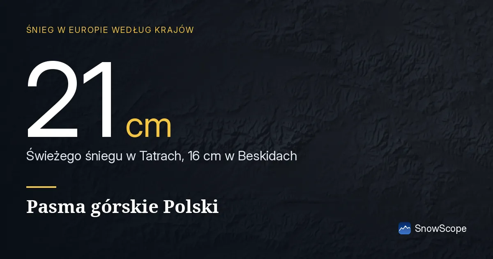

Pasma górskie Polski: 21 cm świeżego śniegu w Tatrach, 16 cm w Beskidach
Przez ostatnie trzy dni polskie góry otrzymały od 10 do 21 cm nowego śniegu, ale rozkład był bardzo nierównomierny. Tatry zebrały najwięcej wilgoci, podczas gdy niższe pasma na południu i w centrum zebrały mniej więcej połowę tej ilości.
Zobacz prognozę śniegu dla Kasprowy Wierch w aplikacji SnowScopeGrubość śniegu, alerty i mapa 3D, za darmo.
Gdzie burza przywiozła najwięcej śniegu
Tatry wyraźnie wiodą w tym zdarzeniu z 21 cm świeżego śniegu przez 72 godziny. To wysokie pasmo górskie na południowej granicy działa jak bariera, która zmusza wilgotne powietrze do wznoszenia się i wysusza opady. Beskidy, dalej na zachód wzdłuż tego samego łańcucha, otrzymały 16 cm. Karkonosze na północnym zachodzie, choć niższe, wciąż zebrały 15 cm.
Te trzy pasma stanowią większość sygnału świeżego śniegu na polskich górach. Poniżej 1000 m wysokości praktycznie nie padał śnieg; linia śniegu dzisiaj znajduje się blisko tego progu. Kluczowa różnica to wysokość: szczyty powyżej 1500 m są teraz pokryte (100% pokrycia, średnia grubość 26 cm), podczas gdy podnóża pozostają głównie nagie.
| Ośrodek | Grubość śniegu | Świeży śnieg, 72 h | Najbliższe dni | Szczyt |
|---|---|---|---|---|
| Kasprowy Wierch | 36 cm | 20 cm | 10 cm | 1 958 m |
| Karpacz | 30 cm | 15 cm | 5 cm | 1 350 m |
| Szrenica | 23 cm | 13 cm | 7 cm | 1 306 m |
| Kompleks Pilsko-Jontek | 15 cm | 11 cm | 11 cm | 1 433 m |
| Borowice | 14 cm | 10 cm | 5 cm | – |

Obraz przez 72 godziny
Na modelowanym obszarze 11060 km2 szacujemy 13 cm jako maksymalny nowy śnieg gdziekolwiek w Polsce przez trzy dni do 21 listopada. Tylko 290 km2 otrzymało 5 cm lub więcej świeżego śniegu. To jest zdarzenie łatami, uzależnione od wysokości, a nie burza obejmująca całą powierzchnię.
Zasięg pokryty śniegiem wzrósł wczoraj z 550 km2 do 1190 km2 dzisiaj, więcej niż dwukrotnie w ciągu jednego dnia. Jednak ten wzrost dotyczy głównie wyższych wysokości i maskuje kontrast poniżej: na średniej górze (1000–1500 m) średnia grubość wynosi tylko 4 cm, a pokrycie to 93%, co oznacza, że wiele stoków pozostaje cienkie lub skaliste.

Które ośrodki mają teraz użyteczny śnieg
Kasprowy Wierch na 1958 m w Tatrach ma 36 cm po wchłonięciu 20 cm przez trzy dni. To najgłębszy śnieg na polskiej mapie narciarskiej dzisiaj i najlepsza podstawa do wczesnosezionowych tras. Karpacz (1350 m, Karkonosze) ma 30 cm z 15 cm nowego śniegu, również godne dla listopada.
Niższe ośrodki pokazują cieńsze podłoża: Szrenica (1306 m) ma 23 cm, Kompleks Pilsko-Jontek (1433 m) ma 15 cm, a Borowice siedzi na 14 cm. Te liczby odzwierciedlają zarówno mniej nowego śniegu, jak i niższe początkowe głębokości. Skały i cienkie plamy są prawdopodobne poniżej 15–20 cm pokrycia, szczególnie na stoków zwróconych na południe.
Co będzie dalej
Prognoza wskazuje na suchszy okres przez następne trzy dni (do 24 listopada), z maksymalnie 10 cm możliwych. Najwilgotniejszym dniem będzie 24 listopada, kiedy modeluje się 7 cm. To nie jest intensywne uzupełnienie; góry raczej nie zobaczą więcej świeżego śniegu do ostatniego tygodnia listopada, kiedy możliwe jest 14 cm przez siedem dni (ale wciąż skoncentrowane na wysokości).
W drugim i trzecim tygodniu wzór oferuje tylko 7 cm tygodniowo—skromne sumy dla środka i późnego listopada. Polskie góry będą musiały cierpliwie czekać na znaczące zdarzenie budowania śniegu.
Jak to porównuje się z ostatnimi dniami
Tydzień temu 2490 km2 Polski była pokryta śniegiem. Dzisiaj 1190 km2 jest białe, strata 1300 km2. Burza nieznacznie odwróciła ten spadek (zyskaliśmy 640 km2 od wczoraj), ale całkowita sytuacja przez siedem dni to kurczący się pokład śniegu na niższych wysokościach. To mówi nam, że śnieg z połowy listopada topniał szybciej niż świeże zaleganie może to zastąpić—typowy rytm dla wczesnego sezonu na marginalne wysokości.
Czytanie pasm wysokościowych
Pasma wysokościowe ujawniają strukturę tego zdarzenia. Poniżej 1000 m praktycznie żaden śnieg się nie utrzymuje (5% pokrycia, 0 cm średniej grubości). Między 1000 a 1500 m, 93% jest teraz pokryte cienką średnią 4 cm—to jest strefa zagrożenia gdzie liczy się każdy kilka stopni. Powyżej 1500 m, 100% pokrycia i 26 cm średniej grubości oznaczają niezawodną strefę. Dla menedżerów wód i hydrologów, to mówi nam że wkład z topienia śniegu do rzek i zbiorników będzie pochodzić głównie z wysokich pasm w nadchodzących tygodniach, z niższymi wzgórzami przyczyniającymi się mało do czasu większego zdarzenia.
Porady dla narciarzy
- Narciarskie powyżej 1500 m dla najlepszego i najstabilniejszego śniegu. Kasprowy Wierch i najwyższe stoki Tatr oferują najgrubsze pokrycie i najmniejszą ekspozycję na skały.
- Sprawdź ekspozycję: stoki północne i północno-wschodnie na średnich wysokościach (1300–1500 m) będą trzymać śnieg dłużej niż słoneczne stoki, które w ostatnich dniach się ocieplały.
- Bądź świadomy że 20–30 cm śniegu we wczesnym sezonie często kryje skały i nierówny teren poniżej. Sonduj lub obserwuj uważnie przed zaangażowaniem się w bardziej strome tereny.
- Obserwuj aktualizację prognozy na 24 listopada; jeśli modelowane zdarzenie 7 cm przesunie się lub wzmocni, może przynieść wartościowy nowy śnieg do niższych ośrodków.
- Skonsultuj się z oficjalnym biuletynem lawinowym jeśli planujesz narciarstwo poza trasami powyżej 1500 m, gdzie świeży śnieg leży na starszych, potencjalnie niestabilnych warstwach.
About these numbers
Resort snow depths are the deepest snow on the resort's upper slopes from the SnowScope snow model (about 1 km, run of 21 listopada); they are estimates for an area, not a measurement at one point. Station values are measurements on the date shown. Forecasts can change. Always read the official avalanche bulletin before going off-piste.
Cite this report
For research, teaching or the press: the numbers and charts are free to reuse under CC BY 4.0 with this citation.
SnowScope (2026), Pasma górskie Polski: 21 cm świeżego śniegu w Tatrach, 16 cm w Beskidach, https://snowscope.app/blog/pl/2026/11/poland-where-the-snow-fell-21-november-2026.html, accessed 2026-11-21
SnowScope (Atlas Labs). (2026, November 21). Pasma górskie Polski: 21 cm świeżego śniegu w Tatrach, 16 cm w Beskidach. SnowScope snow reports. https://snowscope.app/blog/pl/2026/11/poland-where-the-snow-fell-21-november-2026.html
BibTeX
@misc{snowscope2026polandwherethesnowfell21,
author = {{SnowScope (Atlas Labs)}},
title = {Pasma górskie Polski: 21 cm świeżego śniegu w Tatrach, 16 cm w Beskidach},
year = {2026},
month = nov,
howpublished = {\url{https://snowscope.app/blog/pl/2026/11/poland-where-the-snow-fell-21-november-2026.html}},
note = {Published 2026-11-22 10:03 UTC; accessed 2026-11-21}
}· CC BY 4.0 · Methods, data and tools →
Kasprowy Wierch: snow and temperature by height, this winter vs last (tools) →
Follow Kasprowy Wierch
Za darmo: wiadomość, gdy nadchodzi świeży śnieg, i prognoza co rano.